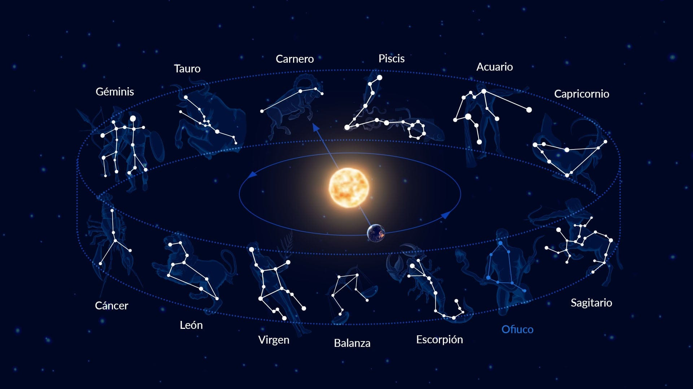
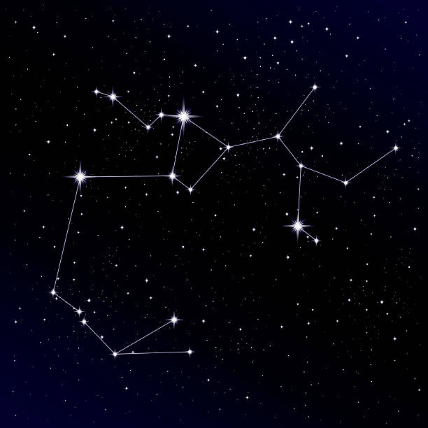
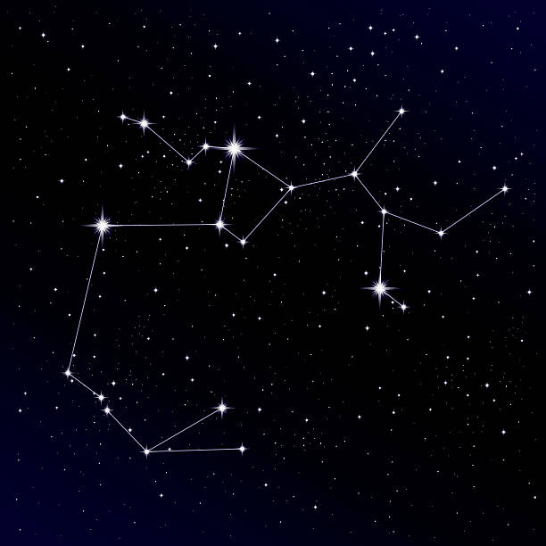
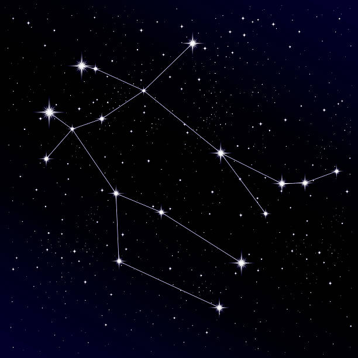
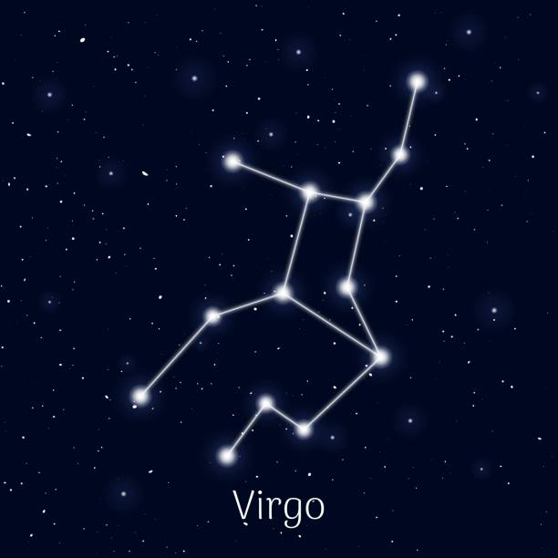
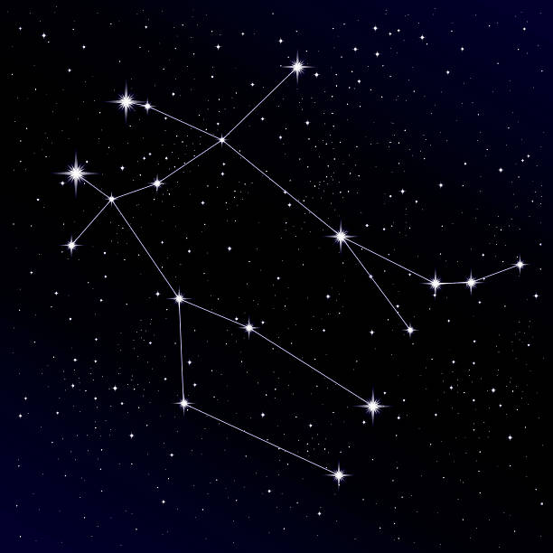
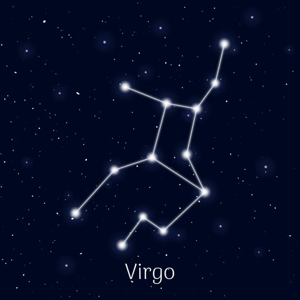

Diagram
Definitions:
-------------
Orion: This constellation represents the hunter in Greek mythology. It is easily identified by its three stars in a line that form Orion's belt.
-------------
Cassiopeia: This constellation represents the vain queen in Greek mythology. Its shape is similar to the letter "M" or "W," depending on the position in which it is viewed.
-------------
Leo: This constellation represents the lion in Greek mythology. It is recognizable by its stars that form a kind of coma.
-------------
Taurus: This represents the bull in Greek mythology. It is recognizable by its stars that form an inverted "V".
-------------
Scorpio: This represents the scorpion in Greek mythology. It is easily identifiable by its luminous stars that form a kind of "J".
-------------
Sagittarius: This constellation represents the centaur archer in Greek mythology. It is easily identifiable by its "teapot" shape.
-------------
Aquarius: This constellation represents the water bearer in Greek mythology. It is easily identified by its stars that form a vase of water.
-------------
Gemini: This constellation represents the twins Castor and Pollux in Greek mythology. It is easily identified by its two bright stars that symbolize twins.
-------------
Virgo: This constellation represents the virgin in Greek mythology. It is easily identified by its brightest star, Spica, which is the fifth brightest star in the night sky.


 

 


